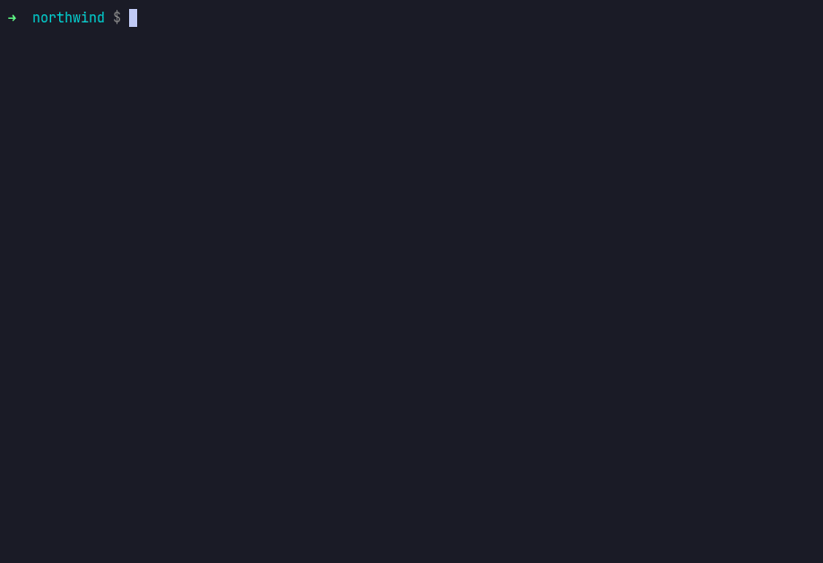

A working, end-to-end demonstration built entirely on free, open-source tooling. One request — "a PCI-scope payments service with a Postgres database, EU residency, staging and prod" — routed two ways. Without a platform, a capable model returns Kubernetes manifests that apply cleanly and fail 42 real policy checks. Through the golden path they converge to zero in three iterations, inside budget, with a human still holding the production approval.
Every policy verdict below came from running the real conftest binary against the
real Rego in policy/. Every manifest came from the real score-k8s
binary and the provisioner set in platform/. Run it twice and the numbers are
identical — that is what a control plane is supposed to give you.
recordings/.One sentence becomes six tickets across six teams. Eleven working days, about four hours of which is work. The rest is queue.
A capable model writes the YAML from the prompt. It parses, it applies, it would pass a distracted review. Conftest and kube-linter return 42 denials.
The agent connects over MCP as a principal and receives 12 of 14 tools. The two it does not receive are the entire point.
Three lines of Score become a Crossplane composite with encryption, a private endpoint, sized backups and a cost-centre tag.
Real OPA denials, each carrying its own remediation. The agent changes the inputs, re-renders, re-evaluates. Zero in three iterations.
$960.82/mo against a $400 envelope. The gate reduced capacity — never the 30-day PCI backup window.
The agent opens a PR carrying the policy verdict and cost delta, then tries to approve its own production promotion. The platform declines.
18 replicas where git says 6. The PCI backup window silently cut. The NetworkPolicy gone for fifteen days. Attributed, and proposed as a diff.
Two front doors onto one golden path: a portal for humans, MCP for agents, the same authorization policy behind both. Every box is a real open-source project or a file in this repository — nothing is a placeholder.
The split that makes it work. Platform defaults eliminate the entire class of structural mistakes deterministically — security context, probes, labels, service-account tokens. No model judgement is involved and none is wanted. What the platform cannot decide for you is judgement: how big, which region, how long to keep backups, how much to spend.
Those are exactly the calls an agent gets plausibly wrong, and exactly what the policy bundle is for. Defaults for the deterministic half, policy for the judgement half, and the agent operates in between.
25 controls across four bundles — 34 deny/warn rule bodies —
all real Rego. Every message carries a policy id and an explicit remediation after
->. That second half is what makes the loop agentic rather than merely a linter:
the agent parses it, changes a Score parameter, and the whole artefact is regenerated.
▍ ITERATION 1 $960.82/mo vs $400.00 budget 1. NW-PCI-003 SQLInstance/nw-payments-ledger-prod: backupRetentionDays=7 is below the 30-day PCI floor fix → set spec.parameters.backupRetentionDays>=30 2. NW-FIN-001 payments-ledger/prod: estimated $960.82/mo exceeds the CC-4471 budget of $400.00/mo by $560.82 fix → right-size the largest line item or request a budget increase 3. NW-FIN-003 resource "payments-ledger-postgres" is $820.67/mo — 85% of the whole service budget fix → single line items over 70% need an explicit exception agent → 2 input change(s), then re-render from source · db_backup_retention_days 7 → 30 PCI requires a 30-day minimum recovery window · db_instance_class db.r6g.xlarge → db.t4g.large largest reducible line item; stays inside the cost-centre envelope ▍ ITERATION 3 $359.15/mo vs $400.00 budget ✔ 0 denials across 4 gates PASSED — 0 denials converged in 3 iterations
conftest you would run in your own
CI, at a pinned version, over Rego you can read in policy/.
Start from what the model handed back and switch on the guardrails a platform team would encode
once. Each verdict list is a genuine conftest + kube-linter run
captured at build time by src/build_playground.py — the page replays recorded
output, it does not approximate Rego in JavaScript.
Switch every control on and one finding survives:
no-anti-affinity — replicas that could all land on one node. It
is the least memorable item on the list, which is exactly why hand-hardening leaves it behind
and a rendered golden path does not. That is the case for rendering rather than reviewing.
Every tool this platform exposes declares a permission, and tools/list is filtered
by the calling identity before the model ever sees it. An agent without
delivery:approve is not instructed to avoid approving production. It is never told
the capability exists.
identity: agent:platform-agent (12/14 tools visible) catalog.get_entity catalog:read catalog.query catalog:read catalog.refresh_entity catalog:refresh ! catalog.register catalog:write platform.estimate_cost finops:read platform.evaluate_policy policy:evaluate ! platform.open_pull_request delivery:propose platform.plan_promotion delivery:plan platform.render_workload platform:render ! scaffolder.execute scaffolder:execute scaffolder.get_template_parameters scaffolder:read scaffolder.list_templates scaffolder:read withheld from this identity: x platform.approve_promotion identity lacks delivery:approve x platform.detect_drift identity lacks observability:read
apiVersion: backstage.io/v1alpha1 kind: AiResource metadata: name: platform-agent spec: type: agent owner: group:default/platform-team identity: platform-agent # The blast radius: twelve entries, # and note which one is absent. allowedTools: - catalog.query - catalog.get_entity - catalog.refresh_entity - catalog.register - scaffolder.list_templates - scaffolder.get_template_parameters - scaffolder.execute - platform.render_workload - platform.evaluate_policy - platform.estimate_cost - platform.plan_promotion - platform.open_pull_request # platform.approve_promotion is not # here, and never will be.
src/catalog.py. platform-agent holds delivery:propose
and never delivery:approve.AiResource.spec.allowedTools. A git-tracked, owned, reviewable
catalog entity that narrows an agent further. An agent's blast radius is a YAML file a
human reviews and an auditor can diff../run.sh tools platform-agent # 12/14 ./run.sh tools drift-agent # 5/14 ./run.sh tools cost-reviewer # 3/14 ./run.sh tools release-manager # 14/14
Borrowed from OpenChoreo (Apache-2.0, CNCF Sandbox), whose control plane routes agent tool calls through the same policy decision point as human API access — as far as I found, the only OSS internal developer platform that does.
A developer writes resources: {db: {type: postgres}} and stops thinking. The
platform team decides, in one file, that "postgres" means a Crossplane composite with
encryption, a private endpoint, sized backups and a cost-centre tag — not an unmanaged
StatefulSet running a mirrored image. Swap that file and every service in the estate gets the
new definition on its next render.
score-k8s generate, real provisioner set.resources: db: type: postgres # That is the whole thing. The only # infrastructure a product engineer # at Northwind ever writes.
apiVersion: platform.northwind.io/v1alpha1 kind: SQLInstance spec: crossplane: compositionRef: name: sqlinstance.postgres.northwind.io parameters: storageEncrypted: true publiclyAccessible: false backupRetentionDays: 30 region: eu-west-1 instanceClass: db.t4g.medium costCenter: CC-4471 passwordSecretRef: { name: ..., key: password }
Plus, without being asked: hardened securityContext, dropped capabilities, read-only root filesystem, liveness and readiness probes, topology spread, a PodDisruptionBudget, a default-deny NetworkPolicy, no automounted service-account token, and ownership and cost-centre labels on every object.
Every Act II violation that had exactly one correct answer is now structurally impossible — and no model was consulted about any of it.
Golden paths get a service created. What kills platforms is month four, when the estate has quietly diverged from what git says is true and nobody knows which of the two is correct.

| Field | In git | In cluster | Who / how | Impact |
|---|---|---|---|---|
| replicas | 6 | 18 | k.mensah · kubectl scale at 02:14 |
12 unplanned replicas — $197/mo, never reconciled back |
| backupRetentionDays | 30 | 7 | out-of-band Terraform from the pre-platform pipeline | PCI 23 days of recovery window silently lost |
| networkPolicy | default-deny | absent | namespace recreated without reapplying it | PCI reachable from every namespace for 15 days |
| automountServiceAccountToken | false | true | namespace recreation restored the default | service-account token mounted into a PCI pod |
The drift agent holds no tool that mutates a cluster. It could not "just fix it" even if you asked. Everything it believes becomes a diff a human merges — so when it is wrong, and it will be, the git history is still the truth.
Nothing is vendored or reimplemented. ./bin/setup.sh fetches official release
artefacts at pinned versions. Where a project has no agentic story yet, this page says so
rather than implying one.
| Project | Role here | License | Version | Agentic surface today |
|---|---|---|---|---|
| Conftest / OPA | Evaluates every policy verdict in this demo | Apache-2.0 | 0.69.0 / 1.19.1 | the gate itself |
| score-k8s / Score | Developer-facing spec; renders the manifests | Apache-2.0 | 0.16.0 | small schema'd YAML an LLM gets right |
| kube-linter | Independent second opinion on rendered output | Apache-2.0 | 0.8.3 | verification |
| Crossplane v2 | The platform API the provisioner renders into | Apache-2.0 | v2.4.0 | no official MCP server |
| Backstage | Catalog + Software Template shape; AiResource |
Apache-2.0 | v1.54.0 | first-party MCP Actions backend |
| Argo CD | Reconciles the merged change | Apache-2.0 | v3.5.1 | argoproj-labs/mcp-for-argocd |
| Kargo | Promotion path staging → prod, with a human gate | Apache-2.0 | v1.11.2 | MCP proposal closed not-planned |
| OpenChoreo | Source of the authz-gated MCP pattern used here | Apache-2.0 | v1.2.2 | 2 MCP servers, 3 in-tree agents |
| Trivy / OpenTofu | Optional scanners and IaC toolchain | Apache-2.0 / MPL-2.0 | 0.74.0 / 1.12.6 | optional |
Versions verified against upstream release pages in August 2026. Deliberately excluded, with reasons in the README: Cyclops and Kusion (both dormant for ~13 months), and Port (closed-source core, archived MCP server, AI agents behind a paid tier).
Produced by src/build_report.py, which executes and times each check against the
real binaries and writes
outputs/verify-report.json. The same suite
runs in GitHub Actions on every push, plus weekly — because the failure mode worth
catching is an upstream release changing behaviour under a demo that claims to be reproducible.
| # | Check | Evidence | Result | Duration |
|---|
No cluster, no cloud credentials, no API key, no LLM. Python 3.10+ and about ninety seconds.
The dev container installs the one Python dependency, fetches the pinned binaries and runs the acceptance suite before handing you a prompt — so the first thing you see is 14/14 passing.
# what the container does before you get a prompt pip install -r requirements.txt ./bin/setup.sh --all # pinned upstream binaries ./run.sh verify # 14/14
git clone https://github.com/adventurewave-labs/\ agentic-platform-engineering-extravaganza cd agentic-platform-engineering-extravaganza ./run.sh setup # pinned upstream binaries ./run.sh demo # eight acts and a scorecard ./run.sh verify # 14 acceptance checks
docker compose run --rm demo docker compose run --rm verify docker compose up site # :8080 docker compose up mcp # :8099
# stdio claude mcp add northwind -- \ python3 src/platform_mcp.py # or streamable HTTP ./run.sh mcp 8099 claude mcp add --transport http \ northwind http://127.0.0.1:8099/mcp
Then ask it for a service. It will list the golden paths, read the parameter schema, render, evaluate, remediate, and stop at the pull request — because that is the last thing its identity is permitted to do.
A demo that overstates itself is worse than no demo. Here is the line, drawn honestly, and the command that checks it rather than asking you to take this table's word for it.
| Component | Status | Detail |
|---|---|---|
| Policy evaluation | real | The pinned conftest binary over the Rego in policy/. Every number on this page comes from it. |
| Manifest rendering | real | The pinned score-k8s binary with the provisioner set in platform/. |
| kube-linter | real | An independent linter nobody here tuned. It found four genuine defects in the platform defaults during development — missing containerPort, no anti-affinity, an unresolvable ServiceAccount reference, an unset unhealthyPodEvictionPolicy. All four were fixed in the platform, not worked around in the demo. |
| MCP server | real | MCP 2025-06-18 over stdio and streamable HTTP, stdlib only. Origin-validated against DNS rebinding. Point Claude Code or Cursor at it. |
| Authorization | real | Enforced in code at tools/list and tools/call, not by prompt instruction. |
| GIFs and casts | real | Rendered from asciinema casts of actual runs via agg. Line timings are synthesised so playback is readable, and the shell prompt shown is added by the cast builder; not one character of tool output is edited. The highlight reel is a selection of acts from one capture — lines dropped, never rewritten. |
| The agent's reasoner | deterministic by default | Denials are parsed and mapped to Score parameter changes by rules, so the demo reproduces exactly with no API key. --backend llm swaps in a real model against any OpenAI-compatible endpoint (Ollama, vLLM, OpenRouter, Z.AI, OpenAI); the loop is unchanged. That it makes no difference to the outcome is the point. |
| Intent extraction | regex | Prose to a structured request. A model does this better on messy input and worse on reproducibility. One function, replaced by --backend. |
| Cost figures | static rate card | A checked-in table in src/costing.py, so there is no account requirement. The schema is an Infracost subset — swap in infracost breakdown --format json and the Rego does not change. |
| Drift observation | fixture | platform/observed-state.yaml. Detection, attribution and the proposed patch are real code over that shape; in a live estate you would feed it from Argo CD's resource tree. |
| Kubernetes cluster | not present | Nothing is applied anywhere. The manifests are rendered and evaluated, which is where every claim here lives. They are valid against a real cluster. |
| Cloud provisioning | not present | The SQLInstance is a real Crossplane-shaped composite; no Composition is installed and no cloud account is touched. |
| Northwind Retail | fictional | The company, the teams and the ticket numbers. The pain is not. |
Do not trust this table — run the suite. ./run.sh verify
executes all 14 checks against the real binaries in about eight seconds, and GitHub Actions runs
the same thing on a clean checkout on every push.
{kind=link}